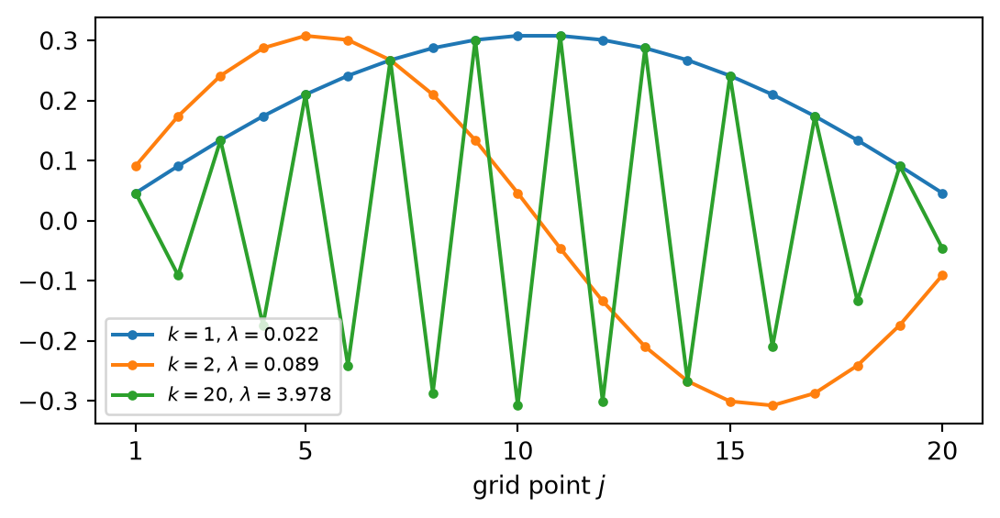
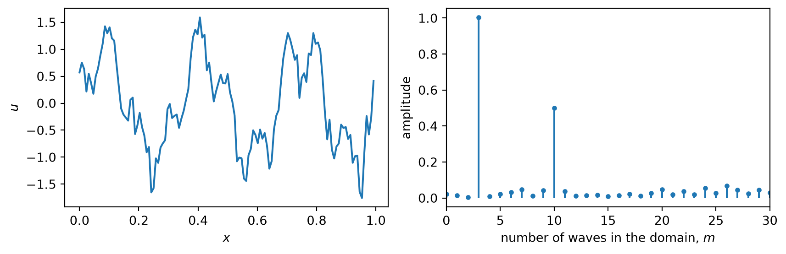
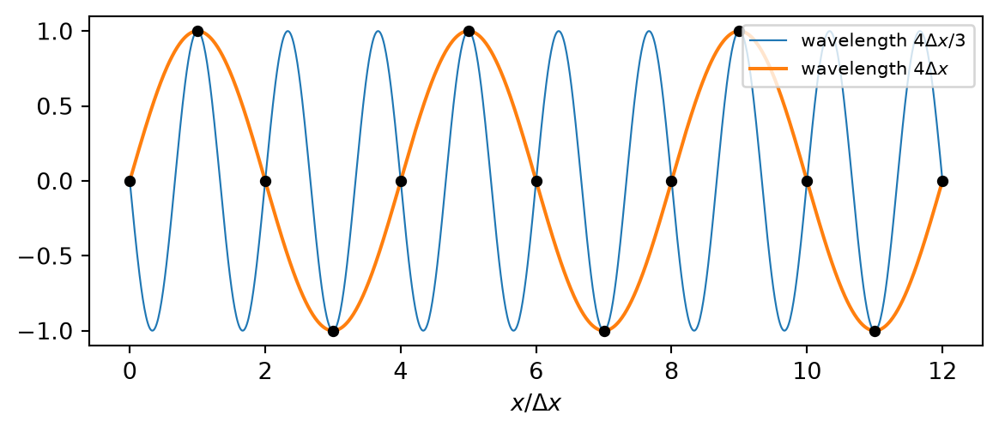
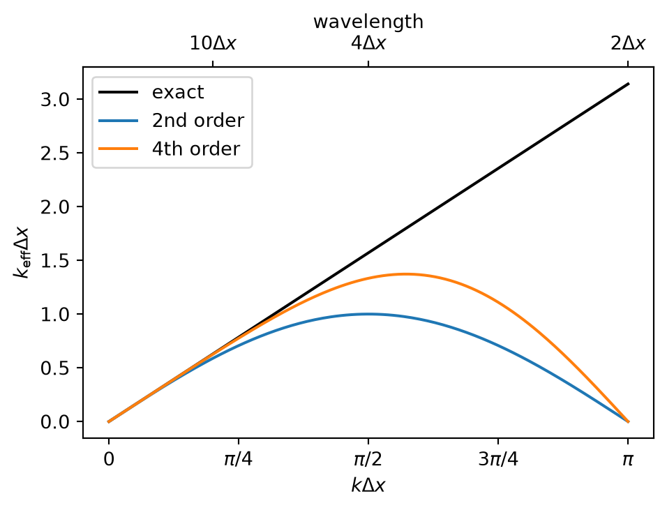

set up the matrix of a finite difference discretization and describe its structure,
derive the eigenvalues of the model matrix and its condition number,
explain what the condition number says about the solution of a linear system,
decompose a signal on a grid into waves with the discrete Fourier transform,
explain the shortest resolvable wave, aliasing and the effective resolution of a grid.
Two more tools are needed before we turn to differential equations. Matrices describe what a discretization does to all grid points at once. Waves describe what it does to each spatial scale. The two views are closely related: the eigenvectors of the most important matrix of this lecture are waves.
4.1 From a differential equation to a matrix
4.1.1 A model problem
Consider the one-dimensional Poisson equation with homogeneous Dirichlet conditions,
We divide \([0, L]\) into \(N + 1\) intervals of width \(h = L / (N + 1)\) with grid points \(x_j = j h\). The values \(u_0 = u_{N+1} = 0\) are known; the unknowns are \(u_1, \dots, u_N\). At each interior point we replace the second derivative by the central difference Equation 3.6:
Row \(j\) of the matrix is the stencil of the difference formula, centred on the diagonal. \(T\) accompanies us through the units on elliptic and parabolic problems. It has three properties that are typical for matrices from discretizations.
4.1.2 Sparsity
Each row has at most three non-zero entries, because each grid point is coupled only to its neighbours. Of the \(N^2\) entries only \(3N - 2\) are non-zero. Such a matrix is sparse. Sparse matrices are stored and processed without their zeros, for example with scipy.sparse. For a model with \(10^8\) grid points this is the difference between possible and impossible: the full matrix would have \(10^{16}\) entries.
4.1.3 Symmetry and positive definiteness
\(T\) is symmetric, \(T = T^T\). It is also positive definite: \(\vec x^T T \vec x > 0\) for all \(\vec x \ne 0\). To see this we write out the quadratic form for \(N = 3\),
a sum of squares that vanishes only if all \(x_j\) are zero. The same rearrangement works for every \(N\). Matrices from diffusion problems have this property, and the most efficient solvers rely on it (Chapter 11).
4.1.4 Eigenvalues and eigenvectors
An eigenvector\(\vec v\) of a matrix \(A\) is a vector that \(A\) only stretches,
\[
A \vec v = \lambda \vec v ,
\]
with the eigenvalue\(\lambda\). For a symmetric matrix all eigenvalues are real and the eigenvectors are orthogonal; for a positive definite matrix all eigenvalues are positive.
The eigenvalues of \(T\) can be derived by hand. Since \(T\) represents a second derivative, and the second derivative of a sine is a sine, we try a sine wave sampled on the grid,
So \(\vec v\) is an eigenvector with eigenvalue \(2 - 2 \cos \theta\), provided the first and last row are also satisfied. These rows lack one neighbour, which is correct only if the missing values vanish: \(v_0 = \sin 0 = 0\) holds automatically, and \(v_{N+1} = \sin \big( (N + 1) \theta \big) = 0\) requires \((N + 1) \theta = k \pi\). This selects \(N\) values of \(\theta\):
The eigenvectors are sine waves with \(k\) half-waves across the domain (Figure 4.1). The smallest eigenvalue belongs to the longest wave, the largest to the shortest.
import numpy as npimport matplotlib.pyplot as pltfrom scipy.sparse import diagsN =20T = diags([-1.0, 2.0, -1.0], [-1, 0, 1], shape=(N, N))eigenvalues, eigenvectors = np.linalg.eigh(T.toarray())fig, ax = plt.subplots(figsize=(6.5, 3))j = np.arange(1, N +1)for index in [0, 1, N -1]: v = eigenvectors[:, index] ax.plot(j, v * np.sign(v[0]), "o-", ms=3, label=rf"$k = {index +1}$, $\lambda = {eigenvalues[index]:.3f}$")ax.set_xlabel("grid point $j$")ax.set_xticks([1, 5, 10, 15, 20])ax.legend(fontsize=8)plt.show()

Figure 4.1: Eigenvectors of the model matrix for \(N = 20\): the two longest waves and the shortest wave.
4.2 Norms and the condition number
4.2.1 Norms
The size of a vector is measured by a norm, for example the Euclidean norm and the maximum norm,
For a symmetric matrix and the Euclidean norm, \(\|A\|_2\) is the largest eigenvalue in magnitude.
4.2.2 The condition number
How sensitive is the solution of \(A \vec x = \vec b\) to errors in the right hand side? Let \(\vec b\) be perturbed by \(\delta \vec b\), and let \(\delta \vec x\) be the resulting change of the solution. Subtracting \(A \vec x = \vec b\) from \(A (\vec x + \delta \vec x) = \vec b + \delta \vec b\) gives \(A \, \delta \vec x = \delta \vec b\), hence
using Equation 4.4. The same inequality applied to \(\vec b = A \vec x\) gives \(\|\vec b\| \le \|A\| \, \|\vec x\|\), or \(1 / \|\vec x\| \le \|A\| / \|\vec b\|\). Multiplying the two inequalities,
The factor \(\kappa(A) = \|A\| \, \|A^{-1}\|\) is the condition number of the matrix. It bounds the amplification of relative errors, and is therefore the condition number of Chapter 1 for the problem “solve a linear system”. For a symmetric positive definite matrix, \(\|A\|_2 = \lambda_{\max}\) and \(\|A^{-1}\|_2 = 1 / \lambda_{\min}\), so that
A rule of thumb: with \(\kappa = 10^{p}\) about \(p\) of the 16 digits are lost.
4.2.3 The condition number of the model matrix
From Equation 4.3 we can compute \(\kappa(T)\) for large \(N\). The largest eigenvalue, \(k = N\), has \(\cos \big( N \pi / (N + 1) \big) \approx -1\), so \(\lambda_{\max} \approx 4\). For the smallest, \(k = 1\), the argument \(\theta = \pi / (N + 1)\) is small and \(\cos \theta \approx 1 - \theta^2 / 2\):
for N in [10, 100, 1000]: T = diags([-1.0, 2.0, -1.0], [-1, 0, 1], shape=(N, N)) eigenvalues = np.linalg.eigvalsh(T.toarray()) k = np.arange(1, N +1) exact =2-2* np.cos(k * np.pi / (N +1))print(f"N = {N:4d}: max. deviation from the formula {abs(eigenvalues - exact).max():.1e},"f" condition number {eigenvalues[-1] / eigenvalues[0]:9.1f},"f" estimate {4* (N +1)**2/ np.pi**2:9.1f},"f" non-zeros {T.nnz} of {N * N}")
N = 10: max. deviation from the formula 4.4e-16, condition number 48.4, estimate 49.0, non-zeros 28 of 100
N = 100: max. deviation from the formula 2.7e-15, condition number 4133.6, estimate 4134.3, non-zeros 298 of 10000
N = 1000: max. deviation from the formula 3.6e-15, condition number 406095.0, estimate 406095.7, non-zeros 2998 of 1000000
The condition number grows as \(N^2\), that is as \(1 / h^2\). Refining the grid makes the discretization more accurate and the linear system harder to solve. This conflict is the reason why solvers for linear systems take up two units of this lecture (Chapter 10, Chapter 11).
4.3 Fourier analysis
4.3.1 Waves on a grid
A periodic function on a domain of length \(L\) can be written as a sum of waves,
with wavenumbers \(k_m\), wavelengths \(L / |m|\) and complex amplitudes \(\hat u_m\). The complex exponential combines cosine and sine, \(e^{i k x} = \cos kx + i \sin kx\) (Euler’s formula), and is used because it is much easier to differentiate and to multiply than the trigonometric functions.
On a grid with \(N\) points \(x_j = j \, \Delta x\), \(j = 0, \dots, N - 1\), and \(L = N \Delta x\), only \(N\) values \(u_j\) are known, so only \(N\) amplitudes can be determined. At the grid points \(e^{i k_m x_j} = e^{2 \pi i \, m j / N}\), and the series becomes
\[
u_j = \sum_{m=0}^{N-1} \hat u_m \, e^{2 \pi i \, m j / N} .
\tag{4.8}\]
4.3.2 The discrete Fourier transform
To solve Equation 4.8 for the amplitudes we use the fact that waves on a grid are orthogonal:
\[
\sum_{j=0}^{N-1} e^{2 \pi i \, (m - n) j / N} =
\begin{cases} N & \text{if } m = n , \\ 0 & \text{otherwise.} \end{cases}
\tag{4.9}\]
For \(m = n\) every term is one. Otherwise the sum is a geometric series \(\sum_{j=0}^{N-1} q^j = (1 - q^N)/(1 - q)\) with \(q = e^{2 \pi i (m - n)/N} \ne 1\) and \(q^N = e^{2 \pi i (m - n)} = 1\), so it vanishes.
We multiply Equation 4.8 by \(e^{-2 \pi i \, n j / N}\) and sum over \(j\). By Equation 4.9 only the term \(m = n\) survives on the right hand side, and it equals \(N \hat u_n\). This gives the discrete Fourier transform (DFT):
\[
\hat u_n = \frac{1}{N} \sum_{j=0}^{N-1} u_j \, e^{-2 \pi i \, n j / N} .
\tag{4.10}\]
Computed directly, the \(N\) sums cost \(N^2\) operations. The fast Fourier transform (FFT) obtains the same result with \(O(N \log N)\) operations. In NumPy, np.fft.fft computes the sum in Equation 4.10 without the factor \(1/N\), and np.fft.rfft does the same for real data, returning only the amplitudes for \(0 \le n \le N/2\). For real data the amplitude of the wave with \(n\) periods in the domain is \(2 |\hat u_n|\).
N, L =128, 1.0x = np.arange(N) * L / Nrng = np.random.default_rng(1)signal = np.sin(2* np.pi *3* x) +0.5* np.cos(2* np.pi *10* x) +0.2* rng.standard_normal(N)amplitude =2*abs(np.fft.rfft(signal)) / Nm = np.fft.rfftfreq(N, d=1/ N) # number of waves in the domainfig, (ax1, ax2) = plt.subplots(1, 2, figsize=(9, 3))ax1.plot(x, signal)ax1.set_xlabel("$x$")ax1.set_ylabel("$u$")ax2.stem(m, amplitude, basefmt=" ", markerfmt=".")ax2.set_xlim(0, 30)ax2.set_xlabel("number of waves in the domain, $m$")ax2.set_ylabel("amplitude")plt.tight_layout()plt.show()

Figure 4.2: A signal composed of two waves and noise (left) and its amplitude spectrum (right).
4.3.3 The shortest wave and aliasing
The shortest wave that a grid can represent has one crest and one trough on two neighbouring points. Its wavelength is \(2 \Delta x\) and its wavenumber is the Nyquist wavenumber\(k_{\max} = \pi / \Delta x\).
What happens to a wave with a larger wavenumber? Consider the wavenumbers \(k\) and \(k + 2 \pi / \Delta x\). At the grid points \(x_j = j \Delta x\)
\[
e^{i (k + 2 \pi / \Delta x) \, x_j} = e^{i k x_j} \, e^{2 \pi i \, j} = e^{i k x_j} ,
\]
because \(e^{2 \pi i j} = 1\) for every integer \(j\). The two waves have the same values at all grid points. On the grid they cannot be distinguished. A wave that is shorter than \(2 \Delta x\) therefore does not disappear when it is sampled: it is mistaken for a longer wave with a wavenumber in the range \(|k| \le k_{\max}\). This is aliasing.
In Figure 4.3 a wave with wavelength \(\tfrac43 \Delta x\), that is \(k = \tfrac32 \pi / \Delta x\), appears as the wave with \(k - 2 \pi / \Delta x = -\tfrac12 \pi / \Delta x\), which has the wavelength \(4 \Delta x\).

Figure 4.3: Aliasing. At the grid points (dots) a wave with wavelength \(4\Delta x / 3\) cannot be distinguished from a wave with wavelength \(4 \Delta x\).
Aliasing matters in nonlinear models. The product of two waves is
a wave with the wavenumber \(k_1 + k_2\). A nonlinear term such as \(u \, \partial u / \partial x\) therefore creates shorter waves from longer ones. If \(k_1 + k_2\) exceeds \(k_{\max}\), the grid misrepresents the product as a longer wave, and energy appears at scales where it does not belong. This can make a model unstable (Chapter 17).
4.3.4 Why waves are the natural test for a numerical method
For a linear equation with constant coefficients each wave evolves independently of the others. It therefore suffices to understand what a numerical method does to a single wave \(e^{ikx}\), and that is easy to compute.
The exact derivative of a wave is
\[
\frac{\mathrm{d}}{\mathrm{d}x} e^{ikx} = i k \, e^{ikx} :
\]
the wave is multiplied by \(ik\). For the central difference Equation 3.5 we factor out \(e^{ikx}\) and use \(e^{i\alpha} - e^{-i\alpha} = 2 i \sin \alpha\):
For \(k \Delta x \ll 1\) the expansion \(\sin (k \Delta x) \approx k \Delta x - (k \Delta x)^3 / 6\) gives \(k_{\text{eff}} \approx k \left[ 1 - (k \Delta x)^2 / 6 \right]\): the relative error is \((k \Delta x)^2 / 6\). This is the truncation error of Equation 3.5, now expressed for each wave separately.

Figure 4.4: Modified wavenumber of the central differences of second and fourth order. The exact derivative corresponds to the diagonal.
Figure 4.4 shows what the statement “second order” hides. For long waves the approximation is excellent. For the \(4 \Delta x\) wave, \(k \Delta x = \pi / 2\), the derivative is too small by the factor \(\sin (\pi/2) / (\pi/2) = 0.64\). For the \(2 \Delta x\) wave it is zero: the central difference does not see the shortest wave at all. A wave needs about ten grid points per wavelength to be treated accurately by a scheme of second order; then \(k \Delta x = \pi / 5\) and the error is 6 %.
This has a consequence that every user of model output should know. The smallest features that a model represents correctly are several times larger than its grid spacing. The effective resolution of a weather model with a grid spacing of 2 km is closer to 10 km.
4.3.5 The second difference and the model matrix
The same calculation for the second difference Equation 3.6, now with \(e^{i\alpha} + e^{-i\alpha} = 2 \cos \alpha\), gives
Compare this with the eigenvalues Equation 4.3 of the model matrix: they are the same expression, with \(k \Delta x = k \pi / (N + 1)\). The wave analysis and the eigenvalue analysis are two views of one fact. Waves are the eigenvectors of difference operators with constant coefficients, and the factor by which a wave is multiplied is the eigenvalue.
Applied to a complete scheme in space and time, this analysis shows whether a wave is damped, amplified or moved at the wrong speed. This is the von Neumann stability analysis (Chapter 12, Chapter 13).
4.4 Summary
Discretizing a linear differential equation gives a linear system. Each row of the matrix is the stencil of the difference formula.
Matrices from discretizations are sparse. Those from diffusion problems are symmetric and positive definite.
The eigenvectors of the model matrix are sine waves, with eigenvalues \(2 - 2 \cos (k \pi / (N + 1))\).
The condition number bounds the amplification of relative errors in the solution of a linear system. For the model matrix it grows as \(1 / h^2\).
A grid represents waves down to a wavelength of \(2 \Delta x\), but treats them accurately only above about \(10 \Delta x\). Shorter waves are aliased.
A difference formula multiplies each wave by a factor. Comparing it with the exact factor shows the error scale by scale.
4.5 Further reading
Durran (2010), chapter 3, for the wave view of finite differences; Shewchuk (1994) for eigenvalues, quadratic forms and the condition number.
Durran, Dale R. 2010. Numerical Methods for Fluid Dynamics: With Applications to Geophysics. 2nd ed. Springer.
Shewchuk, Jonathan R. 1994. An Introduction to the Conjugate Gradient Method Without the Agonizing Pain. Carnegie Mellon University.